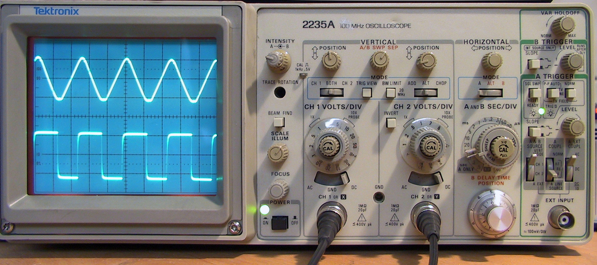
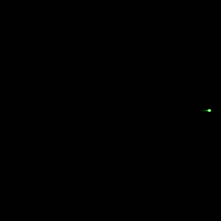
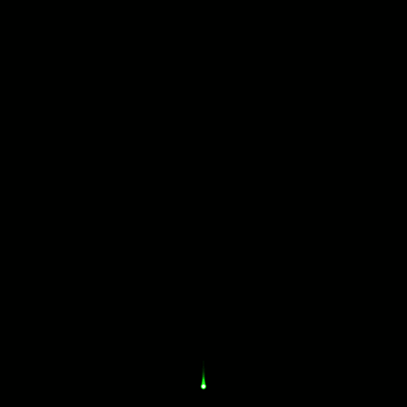
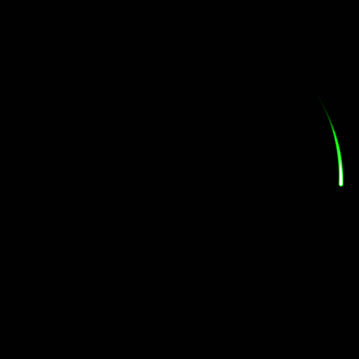
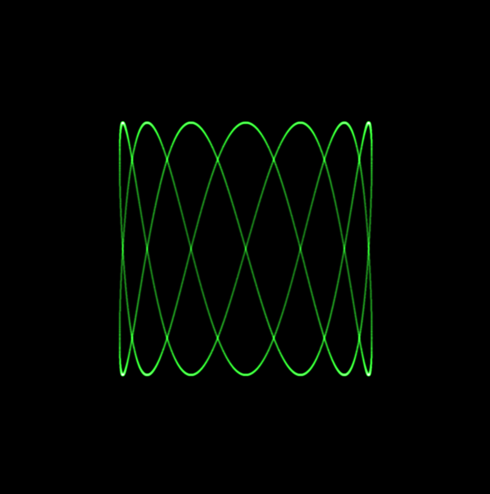

Simulating an XY oscilloscope on the GPU
It's been a couple of years since the post where I first introduced the new game I was working on, Vectron. In this post I wanted to tell you a bit about how I programmed the graphics of Vectron. Although I finished the game nearly a year ago, I was putting of releasing it. Compiling it for Windows and MacOS was a barrier I had to overcome, but I can finally say that I released my first game! You can checkout Vectron's page on itch.io.
Vectron's graphics
After I worked out the basic gameplay elements of Vectron, I made some mood boards to help me determine the visual style I'd like to develop. In the end I wanted my game to have a visual style similar to the arcade game, Tempest, or the Vectrex and I was also greatly inspired by video of Quake being played on an oscilloscope. This led me to doing some research on how the Tempest was programmed, and how the beam in a CRT monitor works and interacts with the phosphors. Then, it was just a matter of time before I discovered the work of Jerobeam Fenderson, who is making music that looks amazing when displayed on an XY oscilloscope. I thus decided to base the design of my game around the concept of sound driving the graphics of the game and vice-versa.
Oscilloscope basics

An oscilloscope is a device that receives electrical signals as input and visualizes their variation over time on a screen. Modern oscilloscopes use an LCD display, but older ones used a cathode ray tube(CRT), similar to older TVs. Typically they operate by periodically horizontally sweeping the CRT beam across the screen, while the voltage of the input signal determines the vertical position of the beam. The sweep frequency as well as the sensitivity of the vertical deflection to the voltage can be adjusted allowing it to display a multitude of signals. As a result of the phosphor layer on CRT, the beam leaves a glowing trail allowing the image to persist for a certain period between frequency sweeps.
Most oscilloscopes have a second input channel, Y, which can be used to control the horizontal deflection using an electrical signal, similar to how the X signal controls the vertical deflection. In this mode, time is not explicitly visualized, but only implicitly through the motion of the beam. In this mode, we can use the oscilloscope as a fancy, really fast Etch A Sketch. Let's first provide a constant 0 voltage signal to the Y channel, and provide a sinusoidal voltage signal to the X channel. If we make the frequency of the signal slow enough, we should be able to see the beam move back and forth like below.  And if we pass a sinusoidal signal to the Y channel, we get the same motion in the vertical direction.  Finally, we can pass both signals, and if we make the Y signal out of face with the X signal by π/2, we get a perfect circular motion.  As you can imagine, we can play with the signals we pass to the X and Y channels, and we literally draw anything, as long as we make the beam fast enough (by increasing the frequency of the signals) such that the phosphor on the screen doesn't have time to decay completely. Patterns formed in this way are known as Lissajous curves. In Vectron, one of the things I did was build a vocabulary of patterns including lines which can be used to build more complex patterns, such as polygons, etc.
Beam Intensity
For rendering the oscilloscope beam, I based my work off of the nice blog post at https://m1el.github.io/woscope-how/. The basic assumption we make to easily and efficiently draw the oscilloscope beam is that between two points, the beam moves linearly. We basically linearly interpolate its position. For a beam from \((0,0)\) to \((l,0)\), given that the intensity of the electron beam as a function of distance from its center follows a Gaussian distribution, \[I(d) = \frac{1}{\sigma \sqrt{2\pi}} e^{-\frac{d^2}{2\sigma^2}}\] the intensity of the beam at a position \(p=(p_x, p_y)\) can be calculated according to m1el's post as, \[F(\mathbf{p}) = \frac{1}{2l} e^{-\frac{p_y^2}{2\sigma^2}}\left[ \textrm{erf}\left(\frac{p_x}{\sigma\sqrt{2}}\right) - \textrm{erf}\left(\frac{p_x - l}{\sigma\sqrt{2}}\right)\right] \] This was calculated by integrating the intensity of the electron beam along its linear path. We can improve m1el's result slightly by incorporating the phosphor decay as an exponential decay factor, \(e^{-\lambda (\Delta t - t)}\), where \(\lambda\) is the phosphor decay constant, and \(\Delta t\) is the beam travel time. We further extend the integration to be over a piecewise linear path with \(N\) linear segments and fix the time for each segment to \(\delta t = \Delta t / N\). Then, by integrating the amount of light that arrives at the point \(\mathbf{p}\), over nth segment, we get, \[ F(\mathbf{p}) = \frac{e^{-\left(\lambda N \delta + \frac{p_y^2}{2 \sigma^2}\right)}}{\sigma l \sqrt{2\pi}} \int_{n \delta t}^{(n+1)\delta t} dt e^{\lambda t} \exp\left[-\frac{(p_x - l (t - n \delta t)/\delta t)^2}{2\sigma^2}\right] \] which after feeding it to Wolfram Alpha, we get the following relatively complicated expression, \[ \begin{split} F(\mathbf{p}) = &\frac{\delta t}{2l} \exp\left[ \left(\frac{\delta t \lambda \sigma}{l\sqrt{2}}\right)^2 - \delta t \lambda (N - n - \frac{p_x}{l}) - \frac{p_y^2}{2 \sigma^2}\right]\\ &\left[ \textrm{erf}\left(\frac{p_x}{\sigma\sqrt{2}} + \frac{\delta t \lambda \sigma}{l\sqrt{2}} \right) - \textrm{erf}\left(\frac{p_x - l}{\sigma\sqrt{2}} + \frac{\delta t \lambda \sigma}{l\sqrt{2}}\right)\right] \end{split} \tag{1} \] As a side-note, at first I did not derive this complicated expression, but instead made an approximation by smoothly interpolating the decay factor along the beam path. If instead of interpolating the decay factor itself, we interpolate the decay factor exponent, we retrieve the following expression, \[ \begin{split} F(\mathbf{p}) = &\frac{\delta t}{2l} \exp\left[ -\delta t \lambda (N - n - \frac{p_x}{l}) - \frac{p_y^2}{2 \sigma^2}\right]\\ &\left[ \textrm{erf}\left(\frac{p_x}{\sigma\sqrt{2}}\right) - \textrm{erf}\left(\frac{p_x - l}{\sigma\sqrt{2}}\right) \right] \end{split} \] which is the same as the more complex expressions with \[ \frac{\delta t \lambda \sigma}{l\sqrt{2}} = 0. \] In practice, this is a reasonable assumption, and setting this expression to 0, does not affect the visual appearance unless the path is really short or the beam radius is really large.
Implementation
In my implementation of the oscilloscope renderer, I draw a fixed number, N, of segments each frame. Furthermore, I use the frame time to multiply the whole frame with the exponential decay factor. I achieve this by using a Frame Buffer Object (FBO), and alpha blending for multiplying by the decay factor. The rendering steps are then the following:
- Bind the FBO.
- Set the blend function to
glBlendFunc(GL_ONE_MINUS_SRC_ALPHA, GL_SRC_ALPHA). - Render a full screen quad with a black color and alpha set to the decay factor, \(e^{-\lambda \delta t N}\).
- Set the blend function to
glBlendFunc(GL_ONE, GL_ONE). - Render beam segments.
- Disable alpha blending.
- Bind the draw buffer and draw the FBO texture to the screen (using SRGB).
Most of the steps are really simple and you can find out how to draw a fullscreen quad on other blog posts, such as this one. For drawing the beam segments we actually use a trick that was described in m1el's post, namely we draw quads but instead of passing the coordinates of each corner, we only pass the coordinates of the segment endpoints, and generate the quad coordinates in the vertex shader based on their vertex id.  The implementation of the above trick can be seen in the vertex shader:
#version 330 layout(location = 0) in vec2 start; layout(location = 1) in vec2 end; // quad vertex ids // 3--2 // | /| // |/ | // 0--1 uniform float beam_radius; uniform vec2 aspect_ratio_correction; flat out float path_length; flat out int edge_id; smooth out vec2 beam_coord; void main(void) { int vid = gl_VertexID % 4; path_length = length(end - start); vec2 dir = beam_radius * ( (path_length > 1e-5)? (end - start) / path_length: vec2(1.0, 0.0) ); vec2 orth = vec2(-dir.y, dir.x); vec2 pos = ((vid < 2)? start - dir: end + dir) + ((vid == 0 || vid == 3)? orth: -orth); pos *= aspect_ratio_correction; beam_coord.x = ( (vid < 2)? -beam_radius: path_length + beam_radius ); beam_coord.y = ( (vid == 0 || vid == 3)? beam_radius: -beam_radius ); edge_id = gl_VertexID / 4; gl_Position = vec4(pos, 0.0, 1.0); }
Note that we pass beam_coord to the fragment shader with the keyword smooth so that it is interpolated over the quad. The fragment shader is a simple implementation of expression (1):
#version 330 #define SQRT2 1.4142135623730951 #define SQRT2PI 2.506628274631001 float erf(float x) { float s = sign(x), a = abs(x); x = 1.0 + (0.278393 + (0.230389 + 0.078108 * (a * a)) * a) * a; x *= x; return s - s / (x * x); } uniform vec3 beam_color; uniform float beam_radius; uniform float beam_dt; uniform float beam_intensity; uniform float beam_decay_time; uniform uint beam_num_edges; out vec4 outColor; flat in float path_length; flat in int edge_id; smooth in vec2 beam_coord; void main(void) { float sigma = beam_radius / 5.0; float total_factor = beam_intensity * beam_dt; if(path_length > 1e-5) { float f = beam_dt * sigma / (SQRT2 * path_length * beam_decay_time); total_factor *= erf(f + beam_coord.x / (SQRT2 * sigma)) - erf(f + (beam_coord.x - path_length) / (SQRT2 * sigma)); total_factor *= exp( f * f - beam_coord.y * beam_coord.y / (2.0 * sigma * sigma) - beam_dt * ( float(beam_num_edges) - float(edge_id) - beam_coord.x / path_length ) / beam_decay_time ) / (2.0 * path_length); } else { total_factor *= exp( -dot(beam_coord, beam_coord) / (2.0 * sigma * sigma) ) / (SQRT2PI * sigma); } outColor = vec4(total_factor * beam_color, 1.0); }
Conclusion
Although you can make great games without being very good at math, or physics, here I was able to show you how leveraging math I could create a game with a unique graphics style. Although I've presented here the final renderer, my first approach was a really dumb CPU implementation where I explicitly (and inaccurately) performed the integral by drawing and accumulating a gaussian for each pixel in the beam's path. The results are actually not that bad as you can see below, and the performance is also better than you'd expect.  Still, by constantly iterating on this idea, I was able to build something much more robust and performant. Despite that, there is still quite a bit room for improvement, such as reducing the overdraw by drawing a triangle strip, or reducing the number of required points, N, by using a better interpolation scheme than the linear interpolation we use now. The latter of course introduces additional complexity for calculating the relevant integrals.
Finally, the implementation of the oscilloscope input is also a very interesting story which I'd like to discuss next time. By introducing a vocabulary of input signals that can be combined in interesting ways, we can even build a simulation of a monochrome CRT monitor. The latter is something I'd like to explore more in the future, including the simulation of color CRT displays.
This is what I like about game programming; taking a simple idea and iterating on it. Playing with different ideas and researching the different possibilities, slowly gravitating to the ones you find the most interesting.